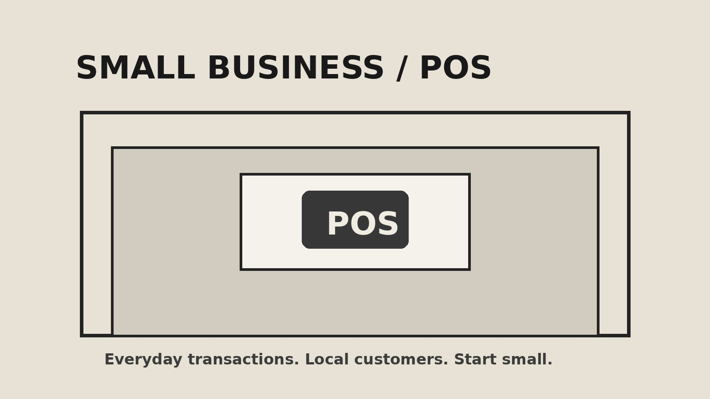

08 / Articles
Ideas worth sharing.
Writing about business, entrepreneurship, people, technology and the honest parts of building in Nigeria.
03 / Mindset & Growth
The Mental Laziness Syndrome: Why You Can Talk for Hours About Nothing but Feel Weak When It's Time to Grow
Why easy conversation can feel effortless while meaningful work feels difficult—and how to retrain your attention, discipline and tolerance for productive discomfort.
Read article →FOCUS
OVER
NOISE
OVER
NOISE
02 / Building & Fintech
I'm Building a Fintech From Scratch. Here's What I Don't Know Yet
An honest account of building SNOKPay from scratch — the frustration that started it, the questions I still have, and why I'm building anyway.
Read article →
01 / Business & Nigeria
5 Businesses You Can Start in Nigeria With Less Than ₦100,000
A practical look at low-capital ideas, what you need to begin and the lessons that matter more than starting capital.
Read article →